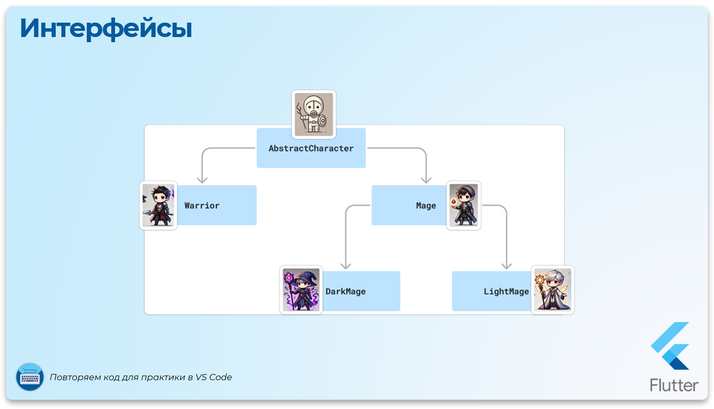
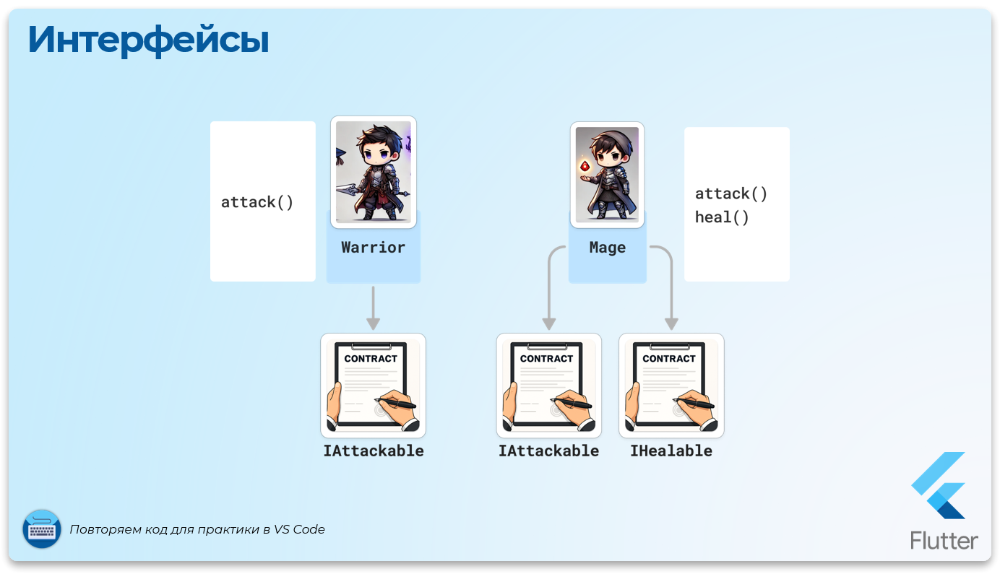

Интерфейсы
Что такое интерфейс?
Итак, мы уже знаем, что полиморфизм позволяет работать с объектами разных классов, используя общий интерфейс или базовый класс. Но что, если нам нужно, чтобы класс не только "наследовал", но и "обязывался" реализовывать определённые методы, независимо от иерархии? Здесь в дело вступает интерфейс.
Интерфейс — это набор "контрактов" (методов и свойств), которые обязуется реализовать класс, подключающийся к интерфейсу (реализующий интерфейс).
Теперь в Dart для создания интерфейсов появилось ключевое слово interface.
Использование и отличие от абстрактного класса
Сравним с абстрактным классом:
- Абстрактный класс предоставляет
как контракт,так и готовую реализацию некоторых методов или свойств.Классы, наследующие абстрактный класс,могут переопределятьих. - Интерфейс — это
чистый контракт. Он диктует, какие методы и свойства должен реализовать класс, но сам не содержит их реализации.
Пример абстрактного класса и интерфейса
Добавим абстрактный класс AbstractCharacter
Dart - Абстрактный класс


abstract class AbstractCharacter {
String name;
int level;
AbstractCharacter(this.name, this.level);
// Абстрактный метод
void attack();
// Реализованный метод
void levelUp() {
level++;
print("$name повышает уровень до $level!");
}
}
Добавим интерфейс IAttackable
Dart - Интерфейс
abstract interface class IAttackable {
void attack();
}
Разберём отличия:
- Абстрактный класс позволяет задать
общую базудля всех наследников. - Интерфейс лишь говорит: "Я
ожидаю, что у вас будет методattack()."Никакой реализации он не предоставляет.
Когда использовать абстрактный класс, а когда интерфейс?
| Абстрактный класс | Интерфейс |
|---|---|
Используется для объектов с общей базой иерархии (например, персонажи игры, у которых есть общие свойства, такие как name и level). |
Используется для объектов, которые не обязательно имеют общую базу, но должны соблюдать определённый контракт. |
Может включать как абстрактные методы, так и готовую реализацию. |
Не содержит реализации — только контракт. |
| Позволяет избегать дублирования кода. | Гарантирует, что класс реализует обязательные методы. |
Использование интерфейса для полиморфизма
Добавим два интерфейса, которые обязывают реализовать методы attack() и heal()
Dart - Интерфейс IAttackable
abstract interface class IAttackable {
void attack();
}
Dart - Интерфейс IHealable
abstract interface class IHealable {
void heal();
}
И реализуем оба интерфейса, IAttackable и IHealable, в разных классах:
Dart - Реализация интерфейсов
import '../interfaces/i_attakable.dart';
import '../interfaces/i_healable.dart';
// Воин реализует интерфейс IAttackable
// Он обязан теперь создать метод attack
class Warrior implements IAttackable {
@override
void attack() {
print("Рыцарь наносит мощный удар мечом!");
}
}
// Маг реализует интерфейсы IAttackable и IHealable
// Он обязан теперь создать методы attack и heal
class Mage implements IAttackable, IHealable {
@override
void attack() {
print("Маг кастует заклинание огня!");
}
@override
void heal() {
print("Маг использует заклинание лечения.");
}
}


Ключевые моменты:
- Мы используем интерфейсы как контракт для классов.
- Классы могут реализовывать несколько интерфейсов, что невозможно при наследовании абстрактного класса (Dart не поддерживает множественное наследование).
Полиморфизм с интерфейсами
Dart - Полиморфизм с интерфейсами
import 'classes/classes.dart';
import './interfaces/i_attakable.dart';
import './interfaces/i_healable.dart';
void main() {
// Работаем с объектами, реализующими интерфейсы
// У них гарантированно доступны методы из интерфейсов
List<IAttackable> attackers = [Warrior(), Mage()];
for (var character in attackers) {
character.attack();
// Гарантировано вызовется для каждого элемента списка
}
// ! Ошибка. Воин не реализует интерфейс IHealable
List<IHealable> healers = [Warrior(), Mage()];
}
Что сделали:
- Мы собрали всех "нападающих" (
IAttackable) в один список, независимо от их класса. - Интерфейс помог гарантировать наличие метода
attack()у всех объектов списка. - Маг (
Mage) поддерживает дополнительный интерфейсHealer, который расширяет его способности.
Интерфейсы полезны:
- Когда нужно определить
общий контрактдлянесвязанныхклассов. - Чтобы гарантировать, что определённые методы доступны, независимо от базы иерархии.
Решайте задачи в своей IDE
Задача: Интерфейсы
Представь виды транспорта, такие как Автомобиль (Car), Велосипед (Bicycle) и Поезд (Train).
Все транспортные средства имеют метод move(), который отвечает за движение.
Но у разных видов транспорта есть свои особенности:
- Автомобиль может включать двигатель перед движением.
- Велосипед просто начинает двигаться, без необходимости включать что-либо.
- Поезд перед движением должен открыть ворота на переезде.
Чтобы обеспечить гибкость и использовать полиморфизм, нужно использовать интерфейс Transport.
Дополни интерфейс методом stop(), который реализуют все виды транспорта. Пусть каждый вид транспорта останавливается по-своему (например, у поезда может быть торможение поезда, у велосипеда — плавная остановка и т. д.).
Шаги решения:
- Создай интерфейс
Transportс методомvoid move() - Реализуй интерфейс
Transportв классахCar,BicycleиTrain - В методах
moveдобавь реализацию, которая отображает особенности каждого типа транспорта. - Создай список
List<Transport> fleet, в котором будут храниться все виды транспорта. - Используй цикл, чтобы вызвать
move()у каждого объекта без проверки типов!